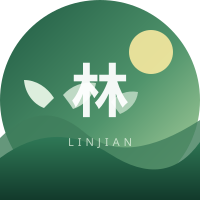

林间小站
文字与生活的慢记录
一间藏在树林里的个人博客：读书、散步、手冲咖啡，也写那些被风吹散的句子。 更新不快，但每一篇都认真。
example.com
访问站点
把常读的个人站点、创作伙伴和灵感来源放在这里，串成一张小小的网。
三个示例友链，展示头像、说明、正文与标签的完整结构。
好的个人站点像一扇半开的窗：不必热闹，但能看见主人认真生活过的痕迹。 下面三站分别关于文字、代码与画画，希望你会喜欢。

文字与生活的慢记录
一间藏在树林里的个人博客：读书、散步、手冲咖啡，也写那些被风吹散的句子。 更新不快，但每一篇都认真。
在代码与星空之间
前端开发者的技术笔记站，记录 CSS 动画、交互细节，以及深夜调试时突然想通的问题。 偶尔也发一些天文摄影。

画画、做饭与胡思乱想
插画师的生活手记，分享水彩练习、家常食谱和旅行速写。 这里的颜色很多，节奏很慢。
以上为示例友链。把卡片中的名称、头像路径、说明、正文、标签和链接替换成真实站点即可。